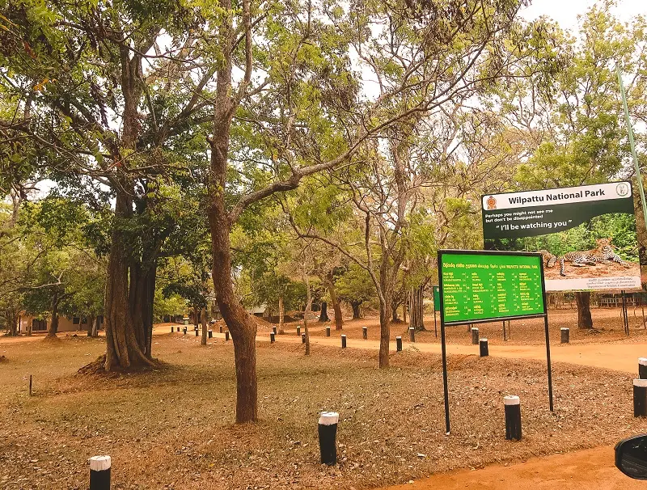
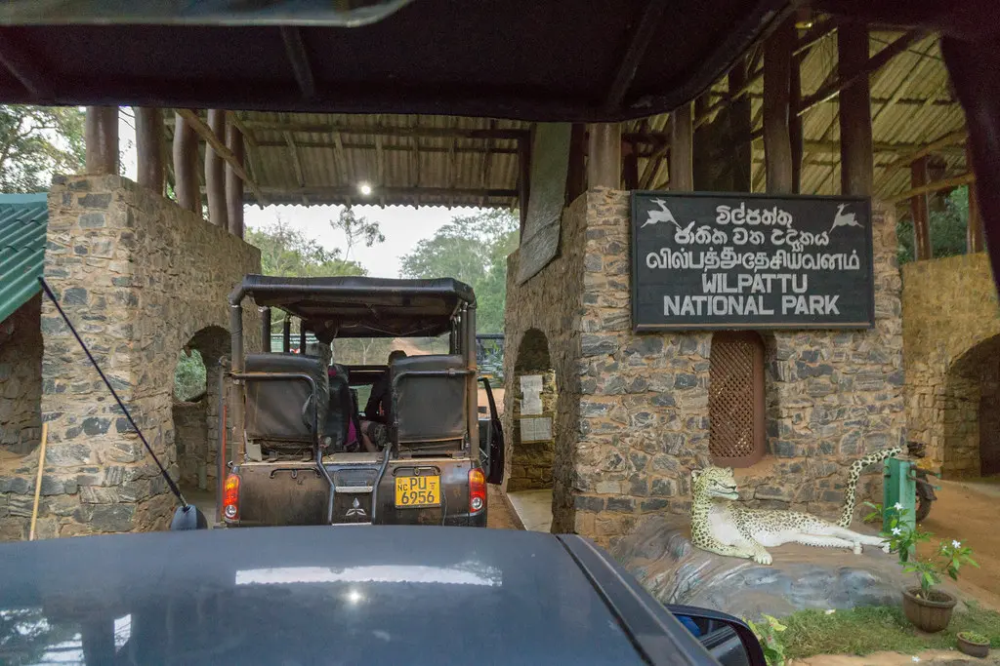
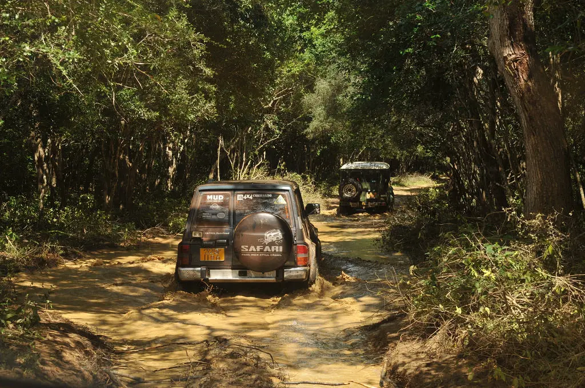
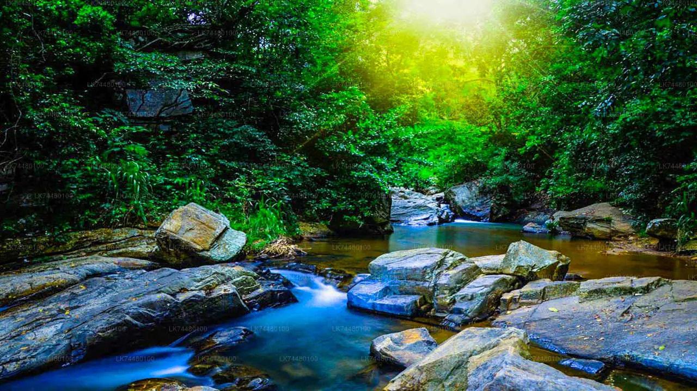
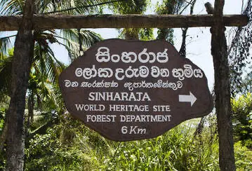
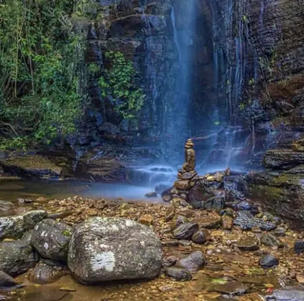
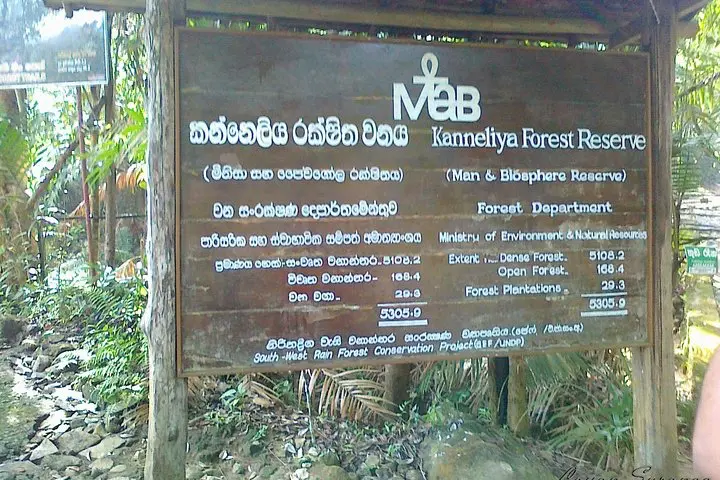
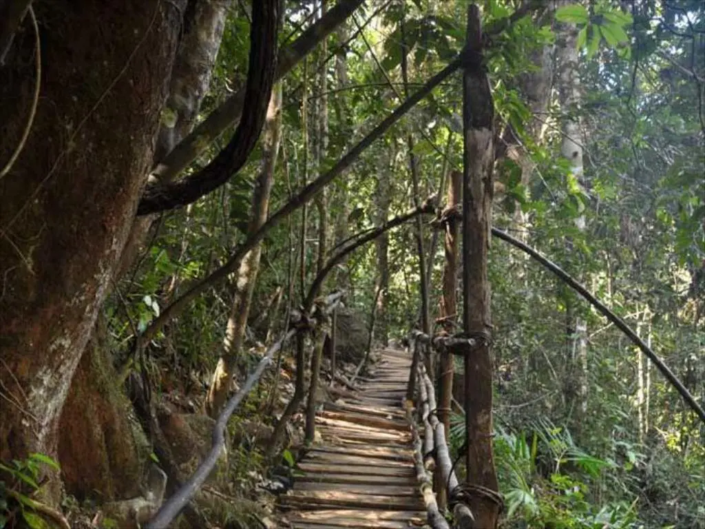

Yala National Park is situated in southeast conner of Sri Lanka. It is also know as Ruhuna National Park. Park has a hot and dry climate due to, its location in arid region. The park contains a diverse range of environment including freshwater lakes, beaches, rocky outcrops, and green plants.This result in a region rich in bio-diversity,also one of the most populara place to see the elusive leopards. Also can spot herd of elephants, crocadiles, deers, buffaloes, sloth bear and many more. Yala offers jeep safaries either personalizes or group tours. It is worth visit all times of the year, however, recomend to plan your trip during December to April
Wilpattu National Park



Wilpattu Nationala Park is located in the Northwest of Sri Lanka. Deffinition of is Wilpattu land of lakes. it was taken by translating to two words which are "Wllu" and "Pattu". so,it is a beautiful lowland forest.Wilpattu is home to many wildlives, including Sri Lankan Leopard, Sloth bear, Sambar deer, Mongooess, and water baffaloes. also it is one of the best place for bird watching. Therefore, you may able to spy on Ceylon grey hornbill, Ceylon prakeet, Red backed woodpacker, and Jungle fowl. Wilpattu is a year round wildlife safari attraction. The dry season, from May to September and early October are the most popular time to vist Wilpattu.
Sinharaja Tropical Rainforest


Sinharaja Forest is situated in the Southwest lowland wet zone of Sri Lanka. It is the country's remaining feasible are of primary tropical rainforest. In 1978, Sinharaja was declared a Man and Biosphere Reserve (MAB) as respresentive of Tropical HumidEvergreen Forest in Sri Lanka and in 1988 it was declared as World heritage site by UNESCO. Most of the tree and wildlife in Sinharaja are endemic and many of them are considere as rare, especially birds, mammals, and butterflies. The different species that can be found in Sinharaja are Loris, Jacakal, Chevrotian, Green pit viper, Hump-nosed viper, Blue magpie, and Sri Lankan crested drongo The most common mammal that can be seen there is purple-faced languar.
Kanneliya Forest Reserve



Kanneliya Forest is situated in outskirts of Galle. It is the second largest primary traopical rainforest in Sri Lanka. Kanneliya is rainforest which is rich in large number of fauna and flora.animals that can be spot in Kanneliya are Sri Lnkan spur fowl, Grey hornbill, Orange biloled babbler, and endemic freshwater fish. also Yellow vine, Shorea, Heart-leaved moonsed, Diptercarpus, and Carse tassel fern are the unique flora that can be seen in Kanneliya. It is a perfect place for hikkers and bird watchers. tourists also can have a swim or a bath in one of the natural pools in Kanneliya. Moreover, Anagimale fall is also located near the entrance.